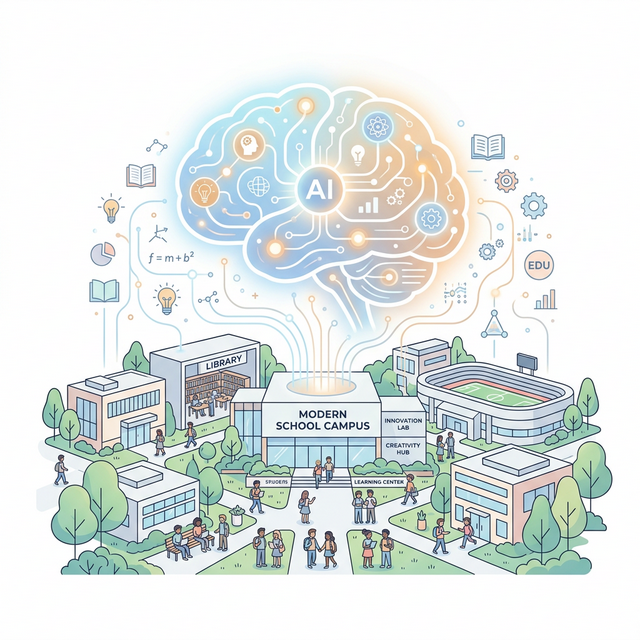
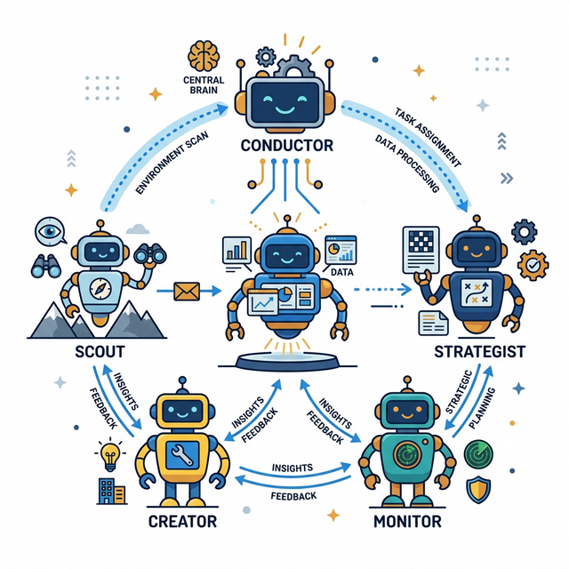
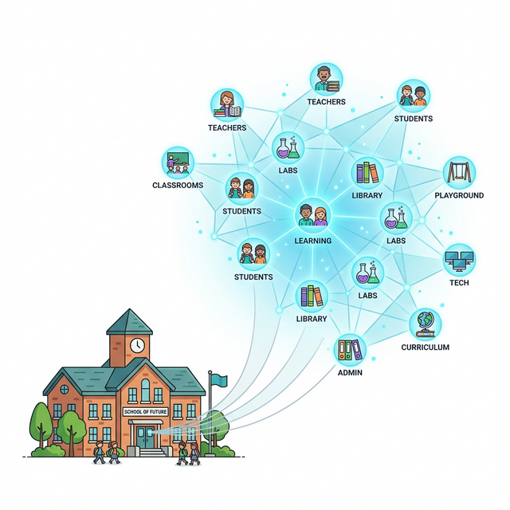
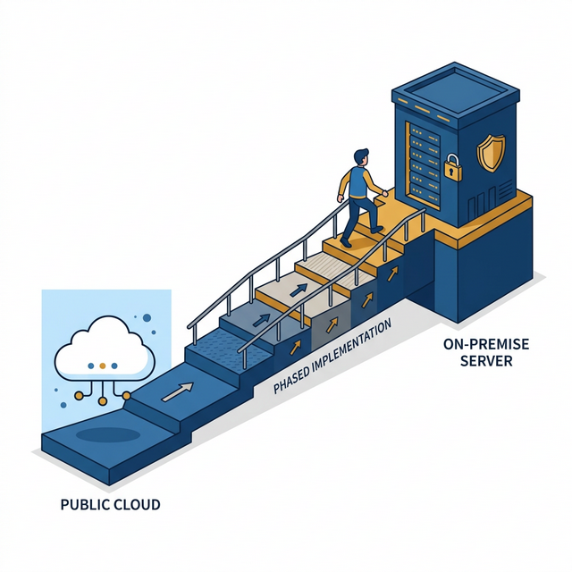

Мультиагентная ИИ-система для Гимназии им. В.В. Давыдова. Невидимый слой управления, освобождающий время для живого мышления.


Мы разделяем задачи (LangGraph + CrewAI). Один агент не может делать всё. Мы создаем оркестр:
Осматривает внешний мир, ищет гранты, анализирует новые законы.
Ищет аномалии внутри школы, прогнозирует когнитивную нагрузку.
Синтезирует инсайты, формирует заявки и расписания.
Гимназия (191 ученик, 31 педагог) представлена как динамический двунаправленный граф. Система видит не просто оценки, а связи. Изменение расписания учителя физики мгновенно просчитывается на предмет выгорания конкретных классов.
Собрав данные двойника, Агент-Скаут автономно "матчит" профиль гимназии с порталом гранты.рф. Система сама находит возможности и кладет директору на стол готовый черновик грантовой заявки.


Используем платные API (Claude 3.5 / GPT-4o) только на синтезированных/чужих данных. Директор видит генерацию гранта за 10 минут. Скепсис сломлен.
Сборка графовой базы. Сложные задачи идут во внешние сети без имен, локальные — обрабатываются просто.
Покупка серверов (на выигранные гранты). Развертывание локальной модели (Llama 3 70B). Полный комплаенс с ФЗ-152.
Агент гимназии программно лишен права давать прямые ответы. Вместо этого он использует модифицированный сократический фреймворк:
Доведение поверхностной идеи ученика до логического абсурда.
Вброс противоречивых фактов, чтобы разрушить шаблон и создать когнитивный тупик.
Серия мягких наводящих вопросов.
Помощь в сборке нового, сложного понятия из руин старого.